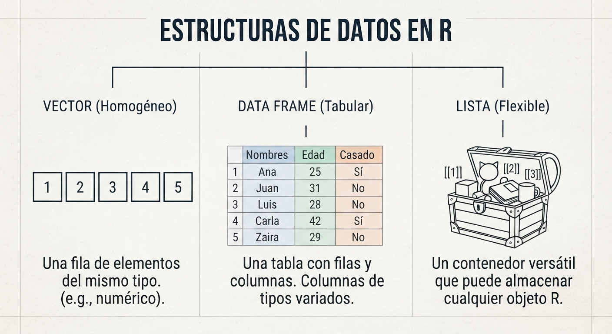

2 El Ecosistema de R y la Computación Estadística
2.1 ¿Qué es R? Un entorno para la minería de datos
R no se limita a ser un lenguaje de programación; se define técnicamente como un entorno integrado de servicios de software diseñado para la manipulación de datos, el cálculo estadístico y la generación de representaciones gráficas de alta calidad. Surgió en 1996 en la Universidad de Auckland, Nueva Zelanda, creado por Ross Ihaka y Robert Gentleman como una implementación de código abierto del lenguaje S (Torgo 2017; Shmueli et al. 2018).
Su éxito en la Inteligencia de Negocios (BI) radica en su naturaleza Open Source, lo que permite una validación constante de sus algoritmos por parte de la comunidad científica y el desarrollo de miles de librerías especializadas que extienden sus capacidades más allá de lo que cualquier software comercial cerrado puede ofrecer (Torgo 2017).
2.1.1 Configuración de la Estación de Trabajo
Para un desempeño profesional, el analista debe configurar un ecosistema robusto compuesto por tres pilares fundamentales:
- R Base: El motor de ejecución, disponible en el Comprehensive R Archive Network (CRAN).
- RStudio (IDE): El entorno de desarrollo integrado que facilita la escritura de código, la gestión de archivos y la visualización de resultados en una interfaz de cuatro paneles (Editor, Consola, Entorno y Utilidades).
- Compilador LaTeX: Herramienta indispensable para la generación de reportes técnicos en formato PDF a través de distribuciones livianas como TinyTeX.
Existen otras alternativas populares para gestionar sus proyectos:
- Google Colab
- Visual Studio Code
- Pycharm
- Posit cloud
- JupyterLab, Jupyter Notebook
- Databricks
| Necesidad principal | Entorno recomendado |
|---|---|
| Investigación y análisis estadístico en R | RStudio / Posit Workbench |
| Desarrollo general multiprogramación (Python/R) | VS Code |
| Pruebas rápidas con GPU o uso educativo | Google Colab |
| Procesamiento masivo de datos (Big Data) | Databricks |
| Prototipado interactivo local | JupyterLab |
2.1.2 Gestión de Proyectos y Buenas Prácticas
Un error común en analistas novatos es trabajar con ficheros sueltos en carpetas genéricas. En minería de datos, el orden garantiza la reproducibilidad.
- Proyectos de R (.Rproj): Siempre inicie su trabajo creando un proyecto (
File > New Project). Esto encapsula todos los activos en una carpeta raíz y evita errores de rutas de archivos al compartir el trabajo con otros equipos. - Nomenclatura de Objetos: Siga el estándar de Wickham (2014): use nombres cortos, siempre en minúsculas y separe las palabras con guion bajo (ej.
monto_totalen lugar deMontoTotalomt). Evite nombres genéricos comodato1otabla.
2.2 Sintaxis Básica y Operaciones en la Consola
Esta sigue el principio matemático de:
\[ f(x)=y\\ comando(arg1,arg2, \ldots) \]
, donde aplicamos una función a un argumento para obtener un resultado.
R maneja operaciones de alta precisión respetando el orden algebraico estándar:
# Operaciones aritméticas
(1500 * 0.15) + 200 # Cálculo de interés
sqrt(144) # Función raíz cuadrada
10^2 # PotenciaciónEsenciales para el filtrado de reglas de negocio en BI, devuelven valores TRUE o FALSE:
100 >= 50 # Mayor o igual
10 == 10 # Igualdad estricta (doble igual)
10 != 5 # Diferente de
(5 > 3) & (10 < 2) # Operador Y (AND)R tiene términos protegidos con significados técnicos específicos:
NA: Dato perdido (Not Available).NULL: Objeto vacío o inexistente.NaN: Error en cálculo numérico (Not a Number).Inf: Infinito matemático.
class(100) # numérica
class("hola") # Texto, caractér
class(2>3) # LógicaEscenario: Un cliente tiene un crédito de 50,000 USD a una tasa del 1.2% mensual.
- Use la consola como calculadora para hallar el interés del primer mes.
- Verifique si ese interés es mayor a 500 USD usando un operador lógico.
- Utilice el comando
?logpara investigar cómo calcular el logaritmo en base 10 del monto total del crédito.
2.3 Estructuras de Datos: Los Activos de Información
En R, todo es un objeto. Para crear estos activos en la memoria, utilizamos el operador de asignación <- (evite el uso de = para asignaciones, ya que puede confundirse con igualdad lógica).
2.3.1 Estructuras Homogéneas (Mismo tipo de dato)
Contienen elementos de una sola clase (números, texto o lógicos):
- Scalar: Un único valor individual.
- Vector: Una colección indexada de valores columna. Se crean con la función combinar
c(). - Matriz: Una estructura bidimensional donde todos los datos son del mismo tipo (ej. una tabla de puros montos financieros).
- Array: Una generalización de la matriz de mas de 2 dimensiones
s1 <- 2
s2 <- "hola a todos"
s3 <- 3==4v1 <- c(2,4,6,8,10)
v2 <- c("a", "b", "c", "hola", "buenos días")
v3 <- v1>5m1 <- matrix(c(1, 2, 3, 4) , 2, 2 )
m2 <- matrix(c("a", "b", "c", "d") , 2, 2 )
m3 <- m1>=2a1 <- array(1:8, c(2, 2, 2))2.3.2 Estructuras Heterogéneas (Múltiples tipos de datos)
Permiten combinar diferentes naturalezas de información, siendo las más poderosas para el analista:
- Data Frames: Es el formato estándar de las bases de datos (tabular). Cada columna es una variable (puede ser de distinto tipo) y cada fila es una observación.
- Listas: El objeto más flexible; puede contener vectores, matrices, modelos y hasta otras listas en un solo contenedor.
nombre <- c("Maria", "Jose", "Ana")
edad <- c(19, 30, 23)
df1 <- data.frame(nombre, edad)
df1s1 <- 1; v1<-c(1,2)
l1 <- list(s1, v1, df1)
l1
Debe registrar el desempeño de tres vendedores: Ana, Luis y Pedro. Vendieron 15, 20 y 12 unidades respectivamente.
- Cree el vector
vendedorescon los nombres. - Cree el vector
ventascon las unidades. - Cree un dataframe llamado
df_comercialque una ambos vectores. - Use la función
str(df_comercial)para inspeccionar la estructura de su base de datos.
2.3.3 Indexación
Se refiere al proceso de acceder, seleccionar o extraer elementos específicos dentro de las estructuras de datos en R (vectores, matrices, data frames y listas) utilizando operadores de extracción.
set.seed(123) # Semilla aleatoria
v1<-runif(10) # Distribución uniforme de 0 a 1
v1[2]
v1[c(3,7)]
v1[2:5]data(iris) #datos en R
iris[2,] #Fila
iris[,2] #Columna
iris[c(2, 5), c(1, 5)]
iris$Petal.Length #seleccionar variablel1<-list(2, 1:10, iris)
l1[[2]]
l1[[3]]$Species2.4 Automatización: Rutinas y Funciones Personalizadas
La minería de datos moderna requiere que el analista deje de realizar tareas manuales y empiece a escribir scripts para procesos repetitivos de limpieza y modelado.
2.4.1 Estructuras de Control de Flujo
Permiten que R tome decisiones o repita tareas automáticamente:
- Condicionales (
if/else): Ejecutan código basado en una premisa lógica (ej. “si el riesgo es alto, denegar crédito”). - Bucles (
for): Repiten una secuencia de comandos un número definido de veces (ej. procesar automáticamente 12 archivos de ventas mensuales).
2.4.2 if
x <- 5
if(x>3){
print("Hola")
} else {
print("Chau")
}
if(x==3){
print("lunes")
} else if(x>3){
print("martes")
} else {
print("viernes")
}2.4.3 for
for(i in 1:10){
print(i)
if(i<5){
print("Hola")
} else {
print("Chau")
}
}2.4.4 while
x <- 1
aux<-1
while(aux>0.05){
aux<-1/x
x<-x+1
}Hola
2.4.5 Creación de Funciones
Una función es una secuencia de procedimientos con un objetivo claro. Si usted debe realizar el mismo cálculo más de tres veces, encapsúlelo en una función:
# Estructura básica
mi_indicador <- function(x) {
resultado <- (x / sum(x)) * 100 # Cálculo de porcentaje participación
return(resultado)
}HOla
2.5 Investigación Reproducible con Quarto
El estándar actual para la minería de datos es el uso de documentos dinámicos que integran narrativa, código y resultados en un solo flujo. A diferencia de copiar tablas a un Word, un archivo de Quarto permite: 1. YAML Header: Definir metadatos y formatos de salida (PDF, HTML, Dashboards). 2. Chunks de Código: Bloques de R donde ocurre el procesamiento, con opciones de control como echo, eval y message. 3. Ecuaciones LaTeX: Inserción de fórmulas matemáticas complejas como \(\sum_{i=1}^{n} x_i^2\) para documentar la metodología algorítmica utilizada.
Esto garantiza que el conocimiento descubierto sea auditable, transparente y fácilmente actualizable si los datos de origen cambian.